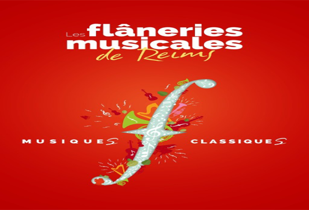

Les Flaneries musicales de Reims

La 30e édition du festival de musique classique des Flâneries Musicales de Reims se déroulera du 19 juin au 11 juillet 2019, le concert pique-nique le 20 juillet 2019
Le tarif de lancement, jusqu’au 25 mai 2019 inclus, s’applique uniquement à l’abonnement 5 concerts et plus (hors concert pique-nique et autres réductions)
Cet abonnement est uniquement disponible sur le bulletin de réservation à la billetterie.Ce festival attire chaque année de plus en plus de visiteur
et et les struccture qui acceuillent nos artistent sont parmis les plus belles du patrimoine français.
Une équipe de journaliste nous as promis un reportage (documetaire) pour immortalisé l'événement c'ette anée vous les croiserais certainement
Toute l'équipe d'orguanisation du festival vous souhaite un agéable séjour dans la ville de Reims et souhaite vous y retrouver l'année prochaine